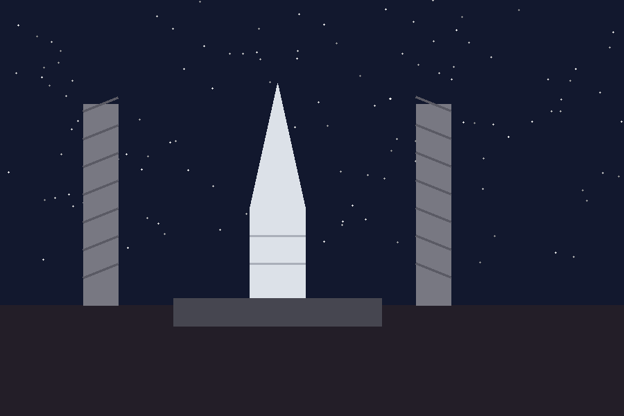

Welcome to the World of Space Exploration
Why Space Exploration Matters
Space exploration has pushed human knowledge, engineering and curiosity far beyond the surface of the Earth. From the first satellite in 1957 to modern reusable rockets, every mission has added a new piece to our understanding of the universe. This website was created as a small guide to the topic, focusing on rockets, launch sites and the people who made spaceflight possible.
- Understanding how rockets escape Earth's gravity
- Learning about famous launch sites, including Baikonur in Kazakhstan
- Seeing how space technology changed everyday life
- Exploring what missions are planned for the future
Key Milestones in Spaceflight
The history of spaceflight is full of important firsts. The list below shows the order in which some of the most important milestones happened, starting with the very first satellite launched into orbit.
- 1957 — Sputnik 1, the first artificial satellite, reaches orbit
- 1961 — Yuri Gagarin becomes the first human in space
- 1969 — Apollo 11 lands the first humans on the Moon
- 1998 — Construction of the International Space Station begins
- 2020 — First crewed commercial spacecraft docks with the ISS
Gallery

Comparison of Historic Launch Vehicles
The table below compares a few well-known rockets used throughout the history of spaceflight.
| Rocket | Country | First Flight | Height (m) | Payload to LEO (kg) |
|---|---|---|---|---|
| Vostok-K | USSR | 1961 | 38 | 4,730 |
| Saturn V | USA | 1967 | 111 | 140,000 |
| Soyuz-FG | Russia / Kazakhstan (Baikonur) | 2001 | 49.5 | 7,150 |
| Falcon 9 | USA | 2010 | 70 | 22,800 |
| Proton-M | 2001 | 58.2 | 23,000 | |
| Data simplified for educational purposes. | ||||